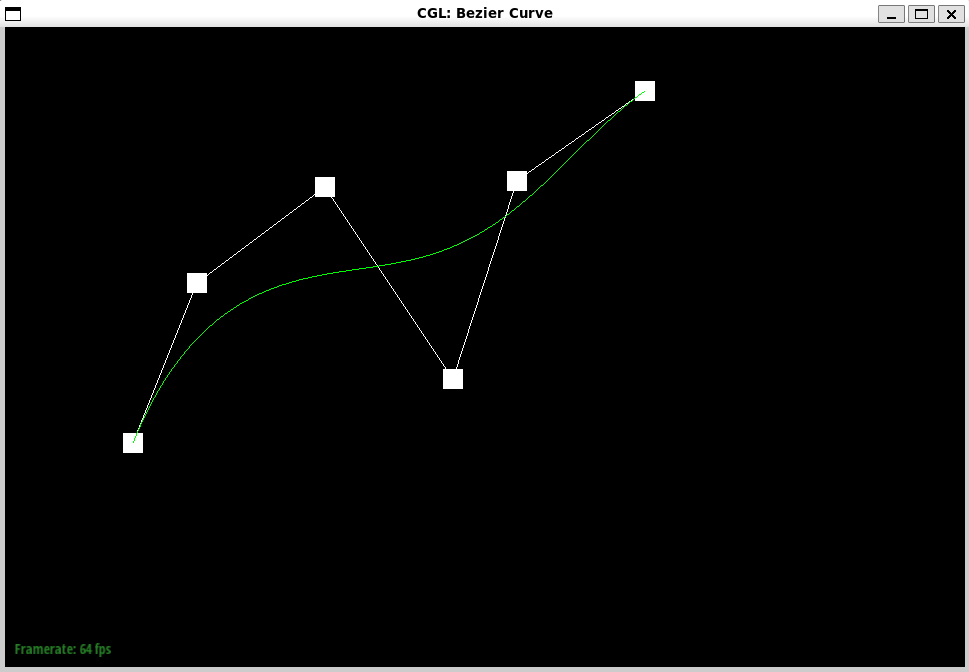
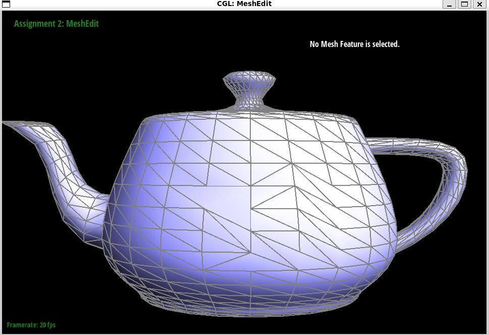

In this hw, I was able to truly understand how to construct bezier curves, then bring them into the third dimension. Then we moved onto mesh processes, which were initially difficult to grasp and debug at first, but drawing it out really helped! I was really amazed by the beauty of the upsampling algorithm, and how it "just works", for any given mesh. I know there are much better upsampling algorithms, but even this basic one was quite amazing to learn and program. Overall really fun experience!
Section I: Bezier Curves and Surfaces
Part 1: Bezier curves with 1D de Casteljau subdivision
Fundamentally, De Casteljau's algo is a recursive, numerical method to evaluate/create polynomials that are better known as Bezier curves. Based on what we created in part I, the algorithm can be used to split a single curve into two, given a parameter "t".
I created a new bezier curve under bzc/curve3.bzc. The 5 images below are as requested:

Base Bezier Curve
Level 1 CurveLevel 2 CurveLevel 3 CurveLevel 3 with Different t Parameter
Part 2: Bezier surfaces with separable 1D de Casteljau
In Part 2, I implemented Bezier surfaces by extending the de Casteljau algorithm to work in two dimensions parameterized by (u,v). The key insight is that we can treat a Bezier surface as a collection of Bezier curves evaluated in sequence to create a "Moving" bezier curve as refered to in lecture.
The implementation follows these steps:
Start with a n×n grid of control points that define the Bezier patch
For a given parameter u, evaluate each row of control points using the 1D de Casteljau algorithm, resulting in n new points
Use these n new points as control points for another Bezier curve
Evaluate this new curve at parameter v using the same 1D de Casteljau algorithm
The resulting point is the final position on the Bezier surface at coordinates (u,v)
Teapot Bezier Surface Visualized In Meshedit program
Section II: Triangle Meshes and Half-Edge Data Structure
Part 3: Area-weighted vertex normals
To implement the area-weighted vertex normals, I traversed all the non-boundary faces (suggested by the primer), then I got 2 vertexes of the face. With those two vertexes (and of course the first vertex of the face being the current position), I was able to get two vectors, which are just 2 edges of the face. We know that taking the cross product of those edges gives us the normal of the face. We also know the fact that the area of a triangular face is simply 0.5 * the normalized cross product. Having both of these, we are able to weight the normalized face normal vector by the area of the face, then add that to the normal_sum_tracker variable. After we have traversed all non-boundary faces, we then normalize normal_sum_tracker and output it if its non-zero.
Shading without Vertex NormalsShading with Vertex Normals
Part 4: Edge flip
This part took forever to get right, since I would always have some hole or some unintended effect. After trying to do things in my head, I decided to look at the pdf that was provided, and it really really helped! I was able to go pointer by pointer and transform what happens to them with the setNeighbors utility. This allowed me to get the requested result. The way flip edges works, is you get all edges, faces, vertices, and halfedges involved, then you utilize setNeighbors to set their new values, while also doing so for the external half edges. Then, you set the halfedges of the faces and vertices correctly, which should provide you with a fully flipped edge! The most difficult part of debugging was realizing I have to set the outside halfedge neighbors too, which finally fixed the problem of holes being created.
The figures below really helped me with this debugging process as I mentioned before.
Before Flip IllustrationAfter Flip Illustration
Finally, below are some before and after images of the teapot with some edge flips.
Before Flip Teapot

After Flip Teapot
Part 5: Edge split
I started with the code I used for the edge flip in order to get all the base elements needed. I then sketched out what elements would be created and how I wanted to label things, as can be seen in the illustration below:
Split Setup
With the nomenclature handeled, I began creating elements like the vertex m at the middle, and the new halfedges, faces, and edges required. I then simply followed the methodology in edge split to connect things together. There was quite a bit of debugging with the connections, but eventually it wasnt too bad. Below are three images showcasing edge split functionality.
Before SplitSplitSplit + Flip
EC: I also handled the boundary cases with edge flip. In the image below, it can be shown that the boundary edges in perspective of the image have been split. I was somewhat confused by the requested handling of it, so I split the edge so that a split appears on both faces on each side of the edge.
Boundary Flip
Part 6: Loop subdivision for mesh upsampling
I implemented loop subdivision by following the suggested steps in the function docstring, in addition to the documentation on the course website. In short, I computed the new vertex positions via the vertex degree 3/16 or 3/8n rule, then updated the position of the old vertex with the second equation. Then, I calculated the vertexes made by edge splits and their respective positions using the 3/8 * (A + B) + 1/8 * (C + D) rule. Then, each edge was added to a vector for ease of use, then each edge in the vector was split, with its output vertex being set to new, and the new vertex's new position being set as the edge's new position. Then, a new vector was made, and the appropriate new edge <-> old edge, non-boundary edges were added to the vector. Each edge in the vector was then flipped, and then each vertex's new position in the mesh was set as its position.
I followed one of the tricks suggested in the Ed to comment out each step and run each step then once the step looks good, move onto the next chronologically. This + some TA help allowed me to figure out that we only need to flip the NEW edges, as I was not checking for that before.
Its interesting that, particularly in the cube example, as the number of upsampling iterations goes up, the sharp edges of the cube begin to look like protrusions that make a lemon-like shape overtime. It looks as each face of the cube has an affine shear transformation done, which makes sense, since we are increasing triangle counts in the mesh by splitting and flipping, which will smooth and shear components of the mesh.
Sharp corners become rounded, and begin to protrude as the number of subdivisions increases. On the otherhand edges become less and less sharp, and turn into smoother curves. With every progressive iteration, we can observe a smoothing effect that is increased. If there are sharp features we want to preserve through the subdivision process, we can pre-split those edges, which places more vertices along those target edges. This higher vertex density allows a higher geometric preservation.
As shown below, we compare the top three set of images (no presplit) with the bottom three (presplit on one side of shape):
Further, doing a simple split for each face of the cube allows for a much smoother and uniform result, compared to the non-preprocessed cube that can be seen in the documentation website. This pre-splitting approach helps because it creates a more even distribution of triangles across the surface before any Loop subdivision is applied. By starting with a more balanced mesh structure, the subdivision algorithm can produce more consistent results without the irregular artifacts that often appear when subdividing larger, uneven triangles. The pre-splitting essentially gives the subdivision algorithm a better foundation to work with, resulting in smoother transitions and more predictable geometry. The images below show the starting point of the preprocessed cube and the 3 upsampling iterations upon it: